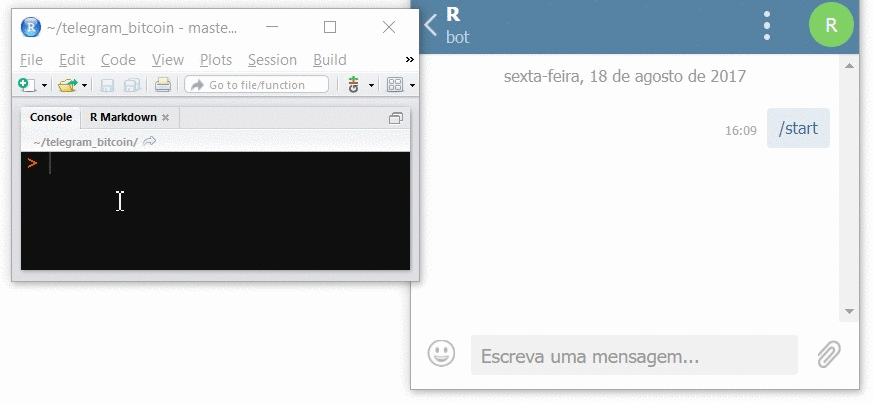
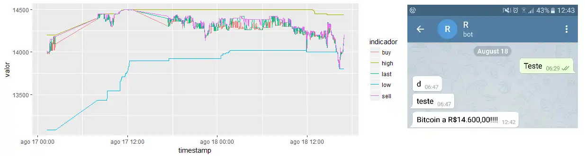
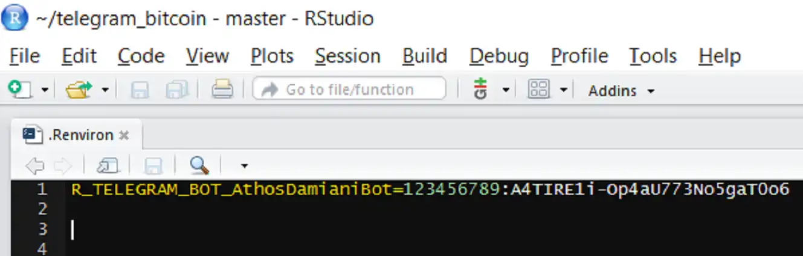

How to make R tell you on telegram that bitcoin is cheap
tutorials
telegram
bitcoin
A fun project to make R send a message to your phone via Telegram when the price of bitcoin goes up or down a lot!
The highlight of the story is R sending a message to Telegram. Just to get you motivated, I’ll tell you about something fun I did with telegram and bitcoin prices.
Hero of the day: Luca Biglia, author of the R telegram package.
What we’ll do
As I mentioned, I’ll build a bitcoin tracker to illustrate, and by the end of the post we’ll have made R send a telegram when the price of bitcoin hits a given level.

Ingredients
For today’s craft project we’ll need:
- A telegram bot
- The R package
library(telegram) - The BlinkTrade API
- String and a tube of glue
The steps we need to follow to get there are:
- Create an .Rproj (RStudio project).
- install and load the R
telegrampackage. - Create a telegram bot with the help of BotFather.
- Connect R to the bot.
- Query and store bitcoin prices every 30 seconds.
- create an infinite loop in R to track the prices nonstop.
- Make R send us a message when the price of bitcoin is above X, for example.
- (extra) Come up with wild ideas of what to do with telegram + R.
Introduction to the components
First of all, a brief introduction to the things that will show up here:
- telegram: just like Whatsapp, but better.
- BotFather: a contact on your phone (on telegram) that helps you create a telegram bot.
- bitcoin: a successful digital currency.
- BlinkTrade: among other things, provides an API for real-time bitcoin values.
Bitcoin tracker
Go ahead and create your .Rproj, run install.packages("telegram");library(telegram) and let’s go straight to the third step.
Step 3: Telegram bot - Create a bot
A bot is like one more person in your telegram contact list, except they are machines instead of humans and respond to specific commands. The fun part is that you can customize these commands any way you like! You just need a purpose and to know how to program it.
The README on the package’s github is very good! I’ll summarize what’s there with small changes:
- Go to your telegram and search for BotFather as if you were looking for a person in your contact list. Start a chat with him!
- Send the text “/start” and then “/newbot”. Give your bot a name (it can be a cute name) and then a username for your bot, which must end in bot.
- Now copy the token BotFather sent you and paste it into
.Renviron. My bot has the usernameAthosDamianiBot, so I should name the variable like this:

If you use this naming convention you can use the bot_token() function to get your token. Otherwise you’ll have to resort to Sys.getenv().
NOTE: Restart R so that .Renviron takes effect.
Step 4: Telegram bot - Connect to R
- Load the package and create a
TGBotobject for the bot you created earlier:
library(telegram)
bot <- TGBot$new(token = bot_token('AthosDamianiBot'))
bot$getMe()Now we need the
chat_id. To get it, search for your bot on telegram as if it were a contact (just like you did with BotFather) and start a chat with it.In R, call the
bot$getUpdates()method to get the messages you sent it into R and, finally, find thechat_idhidden inmsgs.
msgs <- bot$getUpdates()
msgs$message$chat$id[1]
[1] 135717340- With the
chat_idin hand, set it as the defaultchat_id.
bot$set_default_chat_id(135717340)At this point we’re ready to interact with our bot!
Step 5: Query bitcoin prices
Bitcoin prices are provided by the BlinkTrade API, which is very simple to use: just grab the json that the url in the code below returns. While I’m at it, I give it a little polish to make it a data.frame with the query date attached.
library(jsonlite)
library(tidyverse)
safe_fromJSON <- safely(fromJSON, as.numeric(NA))
nova_consulta_list <- safe_fromJSON("https://api.blinktrade.com/api/v1/BRL/ticker?crypto_currency=BTC")
nova_consulta <- nova_consulta_list$result %>%
as.tibble %>%
mutate(timestamp = lubridate::now())
nova_consulta
# A tibble: 1 x 9
high vol buy last low pair sell vol_brl timestamp
<dbl> <dbl> <dbl> <dbl> <dbl> <chr> <dbl> <dbl> <dttm>
1 14438.21 511.5911 14077.01 14200 13801.04 BTCBRL 14200 7257317 2017-08-18 17:09:44NOTE: I used the safely() adverb because the API can choke at any moment, which would make R return an error that would stop the price tracking.
Step 6: Infinite loop to track the prices
The skeleton of the tracker is made of an infinite loop (while(TRUE)), a historico.RData data.frame, a wait time between one query and the next (30 seconds by default) and the query itself.
# initializes historico.RData
# historico <- nova_consulta
# save(historico, file = "historico.RData")
acompanhar_bitcoin <- function(frequencia = 30) {
load("historico.RData")
# infinite loop
while(TRUE) {
# gets the brazilian bitcoin quote (BTCBRL) from the blinktrade API
nova_consulta_list <- safe_fromJSON("https://api.blinktrade.com/api/v1/BRL/ticker?crypto_currency=BTC")
# checks whether the API returned a list
if("list" %in% class(nova_consulta_list$result)) {
nova_consulta <- nova_consulta_list$result %>%
as.tibble %>%
mutate(timestamp = lubridate::now())
# ---------------------
#
# space reserved for the rules!
#
# ---------------------
# stores the query
historico <- bind_rows(historico, nova_consulta)
save(historico, file = "historico.RData")
}
}
Sys.sleep(frequencia)
}Step 7: Rules for telegram messages
Now it’s time to decide what the bot should warn us about! I left two simple examples below using the bot$sendMessage() method, which, as the name suggests, makes the bot send us a message. Now, every time the price of bitcoin is below R$13,600 or above R$14,600 I’ll know right away!
# if the quote value meets some criterion, sends a message via telegram.
if(nova_consulta$buy < 13600 & nova_consulta$last > 13900) {
bot$sendMessage('baixa!')
bot$sendMessage(nova_consulta$buy)
}
# ...
if(nova_consulta$buy > 14600 & nova_consulta$last < 14500) {
bot$sendMessage('alta!')
bot$sendMessage(nova_consulta$buy)
}Extra Step: Wild ideas of what to do with telegram + R
Creativity rules here. You can send plots, sounds, stickers and any kind of media. I made a ggplot to keep an eye on the trend, so I could ask my bot to show me the plot at any time.
# ... this goes inside the acompanhar_bitcoin() function
p <- ggplot(historico %>%
gather(indicador, valor, high, low, buy, sell, last)) +
geom_line(aes(x = timestamp, y = valor, colour = indicador))
print(p)You can also program commands to pass to the Bot so it builds something for us, for example, you could create a command to buy or sell bitcoins in real time!
Julio once created a bot that was practically R itself: you sent code as a message and it returned R’s output! Later I’ll ask him to post something about it.
Anyway, there’s room to be clever here. All it takes is that brilliant shower idea.
Homework: - Send the “gemidão do zap” (a Brazilian prank audio) to 3 friends with a line of code.
cheers!